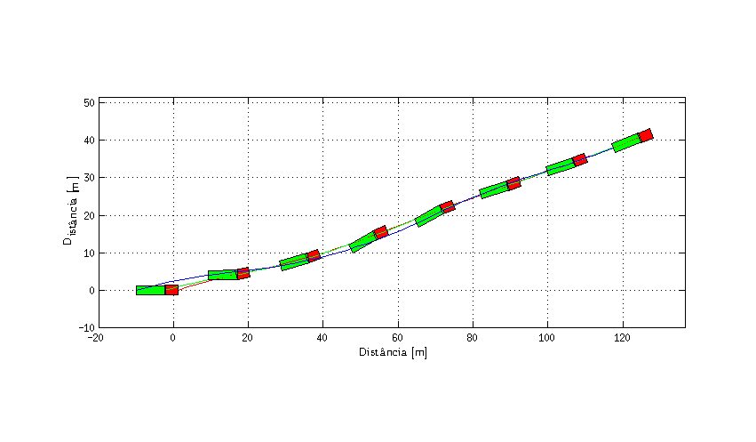

Template articulado
Exemplo de script para simulação de veículo articulado.
Contents
Code start
clear all % Clear workspace close all % Closing figures clc % Clear command window import DinamicaVeicular.* % Import package Dinamica Veicular
Integration parameters
% Simulation time T = 7; % Total simulation time [s] resol = 50; % Resolution TSPAN = 0:T/resol:T; % Time span [s] % Initial conditions dPSI0 = 0.25; % Initial tractor yaw rate [rad/s] ALPHAT0 = 0.3; % Initial tractor side slip angle [rad] dPHI0 = dPSI0; % Initial articulation rate [rad/s] VEL0 = 20; % Initial tractor CG velocity [m/s] PHI0 = 0; % Initial articulation angle [rad] PSI0 = 0; % Initial tractor yaw angle [rad] X0 = 0; % Initial tractor CG horizontal position [m] Y0 = 0; % Initial tractor CG vertical position [m] x0 = [dPSI0 ALPHAT0 dPHI0 VEL0 PHI0 PSI0 X0 Y0];
Default models and parameters
Definindo o modelo de veículo sem passagem de argumentos os parâmetros e modelos padrão são usados.
ModeloSistema = DinamicaVeicular.VeiculoArticuladoNaoLinear4GDL;
Integration
Integration using mass matrix. Details: ode45 (Mass matrix)
% Configurando as opções do integrador para levar em consideração a matriz de massa options = odeset('Mass',@ModeloSistema.MatrizMassa); [TOUT,XOUT] = ode45(@(t, estados) ModeloSistema.Model(t, estados),TSPAN,x0,options);
Post integration
% Retrieving states dPSI = XOUT(:,1); % Tractor yaw rate [rad/s] ALPHAT = XOUT(:,2); % Tractor side slip angle [rad] dPHI = XOUT(:,3); % Articulation rate [rad/s] VEL = XOUT(:,4); % Tractor CG velocity [m/s] PHI = XOUT(:,5); % Articulation angle [rad] PSI = XOUT(:,6); % Tractor yaw angle [rad] XT = XOUT(:,7); % Tractor CG horizontal position [m] YT = XOUT(:,8); % Tractor CG vertical position [m]
Results
Details: Graficos.m
g = DinamicaVeicular.Graficos(ModeloSistema);
Trajectory
g.Trajetoria([XT YT PSI dPSI VEL ALPHAT PHI dPHI],TOUT,0);
Animation
% g.Animacao([XT YT PSI dPSI VEL ALPHAT PHI dPHI],TOUT,0);